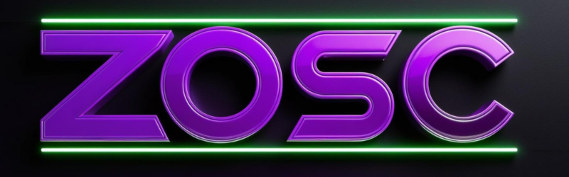

zosc 0.1-alpha

zosc is a C++ library for working with the Open Sound Control (OSC) protocol. It provides tools for creating, sending, receiving, and processing OSC messages and bundles with a simple and intuitive API.
Features 🚀
ZoscMessage
- Create and manage OSC messages with address patterns.
- Supports multiple argument types:
int32_t
float
std::string
std::vector<uint8_t>
uint32_t
- Serialize and deserialize OSC-compliant byte streams.
ZoscBundle
- Nest OSC messages and bundles hierarchically.
- Use NTP-compatible TimeTags for precise scheduling.
- Serialize and deserialize bundles into OSC formats.
ZoscReceiver
- Listen for incoming OSC messages and bundles on a specified UDP port.
- Use callback functions for customized message and bundle processing.
- Operates asynchronously using the ASIO library.
ZoscSender
- Send OSC messages and bundles over UDP.
- Supports raw OSC-encoded data transmission.
- Optimized for low-latency networking.
Usage 🔧
Requirements
- C++17 or later
- ASIO library (standalone or via Boost)
Building Zosc
- Clone the repository:
git clone https://github.com/PedroZappa/zosc.git
cd zosc
- Build the library: Include the Zosc headers in your project. Zosc is a header-only library, so no additional build steps are required.
Documentation 📖
The full documentation for zosc is available online. You can view it by clicking the link below:
View Documentation
Alternatively, you can also generate the documentation locally by running Doxygen and opening the index.html file in a browser.
References 📖
License 🔏
This work is published under the terms of The Unlicense.
 1.9.8
1.9.8